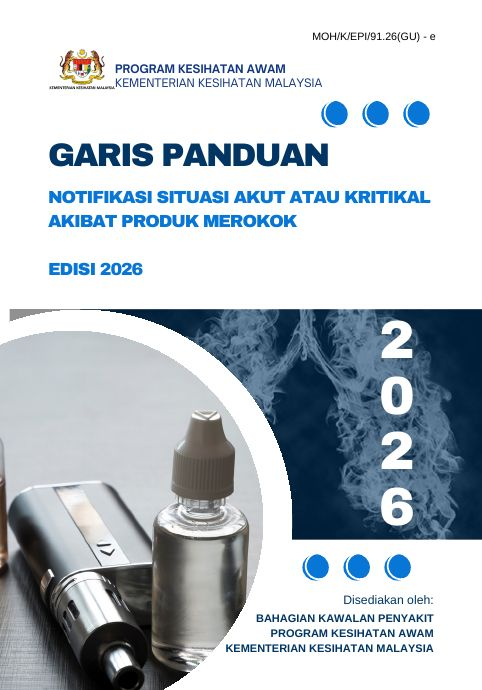

Pertanyaan teknikal
Latar belakang Bab 1–3 GP
Penggunaan produk merokok bukan sahaja menyebabkan penyakit kronik dan kematian pramatang. Ia juga boleh mencetuskan situasi akut atau kritikal, iaitu kejadian yang membahayakan nyawa, kesihatan atau keselamatan dan memerlukan rawatan perubatan segera.
Situasi yang paling kerap dilaporkan ialah EVALI (E-cigarette or Vaping Product Use-Associated Lung Injury), keracunan nikotin, dan komplikasi akut lain (Non-EVALI) akibat bahan kimia berbahaya atau bahan terlarang, terutamanya melalui rokok elektronik atau vape.
Penggunaan vape semakin meningkat dalam kalangan remaja dan dewasa muda, termasuk vape yang dicampur dadah sintetik. Keadaan ini boleh menyebabkan keracunan, kegagalan organ dan kematian.
Sistem notifikasi di bawah SPKPK Bil. 14/2022 hanya meliputi EVALI. Selepas Akta 852 berkuat kuasa, skop notifikasi diperluas kepada semua produk merokok dan semua komplikasi akut, termasuk yang melibatkan sistem organ selain paru-paru.
- SPKPK Bil. 14/2022 mewajibkan notifikasi penyakit berkaitan rokok elektronik atau vape (EVALI).
- Akta Kawalan Produk Merokok Demi Kesihatan Awam 2024 [Akta 852] berkuat kuasa. Tatacara persampelan UIP-AKPMDKA-04-24 dikeluarkan.
- SPKPK Bil. 25/2026 dan GP Edisi 2026 menggantikan arahan 2022. Skop diperluas kepada situasi akut atau kritikal akibat semua produk merokok.
Objektif garis panduan
Menyediakan tatacara notifikasi, penyiasatan, pelaporan dan pemantauan situasi akut atau kritikal yang disyaki berkaitan produk merokok.
Menyeragamkan pelaksanaan notifikasi dan pengurusan kes di semua fasiliti kesihatan.
Menyokong pengumpulan data epidemiologi untuk penilaian risiko, tindakan kawal selia dan perlindungan kesihatan awam.
Ringkasan garis panduan Bab 4–14 GP
Garis masa notifikasi dan pelaporan
Tempoh dikira dari masa PKD menerima notifikasi, kecuali notifikasi awal yang dikira dari masa diagnosis.
Notifikasi kes disyaki dengan Borang Notifikasi. Jangan tunggu diagnosis akhir.
PKD mengesahkan kes disyaki. JKN menghantar borang yang disahkan ke IPKKM.
Definisi kes
Suspected case
Probable EVALI
Confirmed EVALI
Penyakit selain EVALI
Siasatan, PDRM dan analisis sampel
Siasatan PKD
- Dalam 48 jam selepas notifikasi, guna Borang Siasatan.
- Temu bual bersemuka dengan kes, keluarga, penjaga, rakan atau saksi: kronologi, tarikh, masa, tempat, punca, ciri produk.
- Semak rekod rawatan awal di hospital atau klinik.
- Ambil barang kes, label dengan identiti kes. Ambil keseluruhan baki sampel untuk analisis termasuk chemical profiling.
- Lawat lokasi kes memperoleh produk. Ambil sampel proxy dari saluran yang sama jika barang kes tiada.
Bila libatkan polis
- Ada bukti kukuh (ujian urin positif dadah dan barang kes mengandungi bahan terlarang): hospital atau klinik membuat laporan polis.
- Tiada bukti (urin negatif, tiada barang kes, atau kedua-duanya): PKD boleh menghantar surat pemakluman kepada BSJN IPD.
- Tindakan PDRM di bawah Akta Dadah Berbahaya 1952 atau Akta Racun 1952.
Analisis sampel
- Analisis: nikotin, propylene glycol, glycerol (kuantitatif) dan chemical profiling.
- Barang kes dan sampel proxy dihantar ke MKAK.
- Jika urin positif dadah: barang kes diambil PDRM dan dihantar ke Jabatan Kimia Malaysia.
- Hantar hanya baki produk yang disyaki punca kejadian. Ikut carta alir pengambilan sampel.
- Makmal memaklumkan keputusan kepada pemohon, s.k. JKN dan IPKKM.
Kluster dan tindakan kawal selia
Pengurusan kluster
Dua atau lebih kes disyaki yang mempunyai hubung kait epidemiologi melalui produk dengan jenama, jenis atau nombor kelompok yang sama.
- PKD mengaktifkan bilik gerakan dan menutupnya selepas pengurusan kluster tamat.
- Persampelan berdasarkan penilaian risiko dan arahan IPKKM (kuasa Seksyen 27 Akta 852).
- UIP Daerah dan Negeri menyiasat sumber produk dan rantaian bekalan.
- Hantar Laporan Pengurusan Kluster bersama Pelaporan ke CPRC.
Laluan tindakan kawal selia
- Pasukan teknikal (pakar klinikal, PKD, JKN, IPKKM) menilai maklumat klinikal, siasatan, risikan, keputusan makmal dan bukti epidemiologi.
- KPK boleh menasihati Menteri menubuhkan Jawatankuasa di bawah Seksyen 21 Akta 852.
- Jawatankuasa menilai hubungan produk dengan kejadian dan mengemukakan syor.
- Menteri boleh melarang atau menyekat import, pengilangan, pengedaran atau penjualan produk berkenaan.
Penguatkuasaan bersepadu
| Agensi | Peranan utama | Perundangan |
|---|---|---|
| KKM | Kawalan dan pencegahan penyakit akibat produk merokok | Akta 852 |
| PDRM | Siasatan jenayah, pengedaran dan penjualan produk merokok yang mengandungi bahan terlarang | Akta Dadah Berbahaya 1952; Akta Racun 1952 |
| JKDM | Kawalan import, eksport, penyeludupan, cukai import dan duti eksais | Akta Kastam 1967; Akta Eksais 1976 |
| KPDN | Kawalan peranti rokok elektronik | Akta Perihal Dagangan 2011 |
| PBT | Pelesenan dan kawalan premis | Akta Kerajaan Tempatan 1976; Undang-undang Kecil PBT |
Peranan mengikut peringkat
Hospital / Klinik Kesihatan
Pakar perubatan, pegawai perubatan, paramedik, PPKP Unit Kesihatan Awam
- Fahami CPG EVALI dan GP Notifikasi Edisi 2026.
- Periksa pesakit, kenal pasti punca gejala dan beri rawatan.
- Notifikasi kepada PKD dalam 24 jam selepas diagnosis.
- Buat laporan polis jika disyaki bahan terlarang dan ada bukti kukuh.
- Sahkan diagnosis akhir berdasarkan pemeriksaan, makmal dan radiologi.
Pejabat Kesihatan Daerah
Unit NCD, Survelan, UIP dan Promosi Kesihatan
- Terima, sahkan dan siasat notifikasi kes disyaki; hantar laporan ke JKN.
- Ambil dan hantar barang kes dan sampel proxy ke Makmal Kesihatan Awam.
- Keluarkan surat pemakluman kepada BSJN IPD bagi kes disyaki bahan terlarang.
- Pantau, selaras dan analisis data peringkat daerah.
- Sediakan laporan akhir; aktifkan dan tutup bilik gerakan bagi kluster.
- Rancang kawalan, pencegahan, penguatkuasaan dan risikan; buka fail siasatan bagi kesalahan yang dikenal pasti.
Jabatan Kesihatan Negeri
TPKN (Kesihatan Awam), Unit NCD, Survelan dan UIP
- Terima dan sahkan notifikasi daripada PKD; laporkan kepada CPRC IPKKM.
- Beri khidmat kepakaran teknikal peringkat negeri.
- Selaras, analisis dan pantau data serta tren negeri.
- Rancang strategi, pelan tindakan dan sumber untuk kawalan, pencegahan dan penguatkuasaan.
- Adakan mesyuarat penilaian situasi akut atau kritikal peringkat negeri.
- Selaras penguatkuasaan dan risikan, termasuk semakan fail siasatan.
Ibu Pejabat KKM
BKP, BPKA, Makmal Kesihatan Awam (MKAK)
- CPRC: terima laporan awal, kluster dan akhir; semak kelengkapan; sediakan laporan situasi.
- Kepakaran teknikal, analisis tren kebangsaan, kemas kini garis panduan dan latihan berterusan.
- Penilaian risiko dan penyelarasan Jawatankuasa Khas.
- Makmal: tetapkan tatacara pengurusan sampel dan kaedah analisis.
- Penguatkuasaan: selaras risikan dan semak fail siasatan.
Alat bantu klasifikasi kes Rajah 4 GP
Jawab setiap soalan untuk mendapatkan kategori kes. Klasifikasi akhir tetap bergantung pada penilaian klinikal dan pengesahan diagnosis.
Punca kuasa & dokumen rujukan
Surat Pekeliling Ketua Pengarah Kesihatan Malaysia Bil. 25/2026
Arahan Notifikasi Situasi Akut atau Kritikal Akibat Produk Merokok

Peruntukan undang-undang berkaitan
Tel: 03-8892 4530 · E-mel: fctcmalaysia@moh.gov.my
Lampiran, carta alir & borang
Setiap borang dan carta alir dibina semula dalam format A4. Buka untuk paparan di skrin, cetak terus, atau muat turun PDF. Templat Word yang boleh disunting disediakan untuk surat dan laporan.
Bahan kursus Slaid pembentang
Kursus Pengurusan Situasi Akut dan Kritikal Berkaitan Produk Merokok
Koleksi slaid yang dibentangkan sepanjang kursus. Dibuka dalam Google Drive.